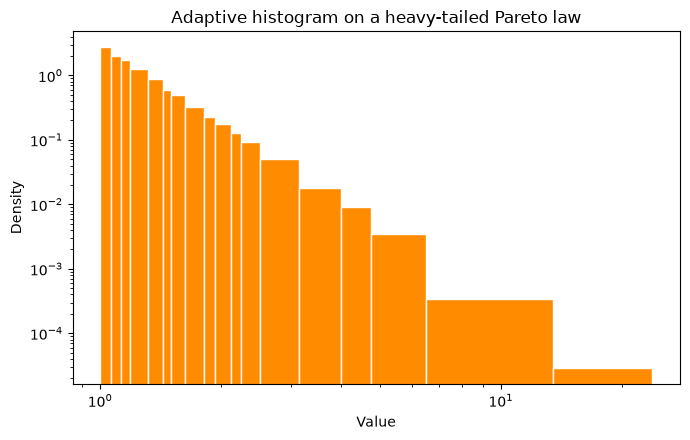
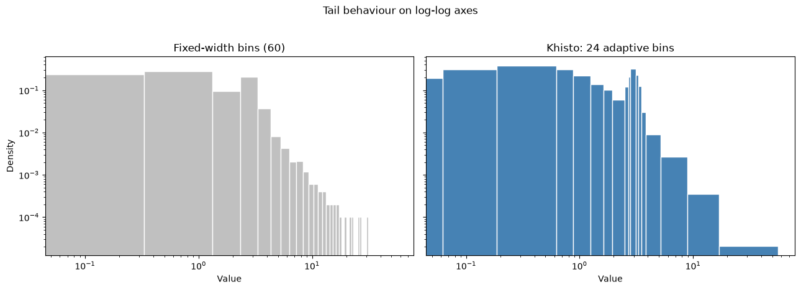
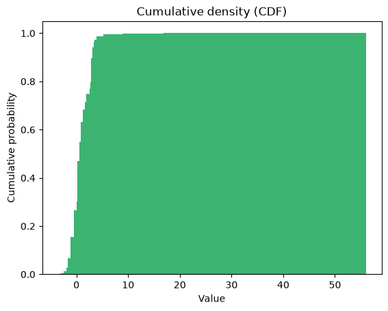
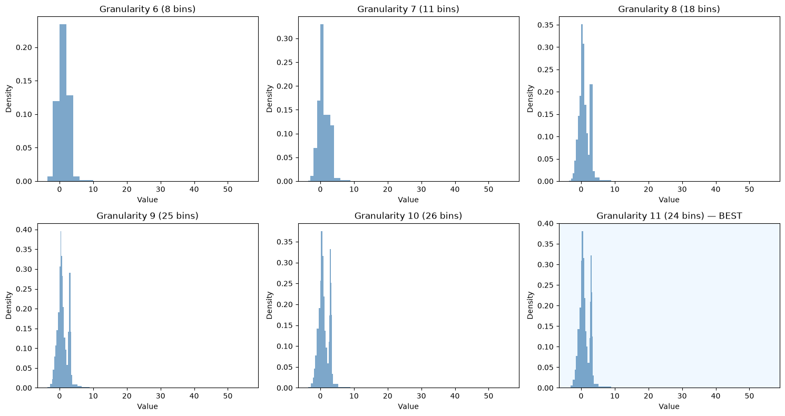

Khisto — optimal binning histograms¶
A good histogram should reveal the structure of your data without asking you to guess the right number of bins first. Khisto chooses the bins for you: it uses the Khiops optimal binning algorithm (the MODL / Minimum Description Length principle) to pick both the number of bins and their — possibly unequal — widths, so dense regions get fine bins and sparse regions get wide ones.
This notebook goes from the simplest case to a richer one:
Quick start — two textbook distributions (a Gaussian and a heavy-tailed Pareto), each in a single call.
A three-component mixture — a more realistic example used to tour the full API.
Throughout, we plot the density rather than raw counts. With variable-width bins this is almost always the right choice: a tall-but-narrow bin and a short-but-wide bin can hold the same number of points, so only the density (count divided by bin width) shows the true shape of the distribution.
📚 For a didactic walk-through of optimal histograms — from the simplest to the most complex — see the histogram documentation in Khiops fundations
1. Quick start¶
The simplest promise: one call, sensible bins, a readable density. We start with two distributions where the “right” binning is well understood, so you can see that Khisto does the natural thing.
[13]:
import numpy as np
import matplotlib.pyplot as plt
from khisto import histogram
from khisto.matplotlib import hist
SEED = 42
A standard Gaussian — linear scale¶
For a bell curve, a linear axis is the natural view. khisto.matplotlib.hist works like plt.hist, but the bins adapt to the data.
[14]:
gaussian = np.random.default_rng(SEED).normal(0, 1, 10000)
fig, ax = plt.subplots(figsize=(7, 4.5))
hist(gaussian, ax=ax, color="steelblue", edgecolor="white")
ax.set_title("Adaptive histogram on a standard Gaussian")
ax.set_xlabel("Value")
ax.set_ylabel("Density")
plt.tight_layout()
plt.show()

A heavy-tailed Pareto — log-log scale¶
Heavy-tailed data spans several orders of magnitude, so a log-log view is the natural one. Fixed-width bins struggle here — they are either too coarse in the body or empty in the tail — while adaptive bins stay informative all the way out.
[15]:
pareto = np.random.default_rng(SEED).pareto(3, 10000) + 1.0 # shift to start at 1 for log axes
fig, ax = plt.subplots(figsize=(7, 4.5))
hist(pareto, ax=ax, color="darkorange", edgecolor="white")
ax.set_xscale("log")
ax.set_yscale("log")
ax.set_title("Adaptive histogram on a heavy-tailed Pareto law")
ax.set_xlabel("Value")
ax.set_ylabel("Density")
plt.tight_layout()
plt.show()

2. A richer example — a three-component mixture¶
To exercise the rest of the API we use a more realistic distribution that mixes three components:
a standard Gaussian (broad central mass),
a narrow, peaked Gaussian (a sharp mode), and
a lognormal (a stretched right tail).
10,000 samples keep the adaptive refinement visible while staying fast to compute. This single data array is reused for every example below.
[16]:
rng = np.random.default_rng(SEED)
data = np.concatenate([
rng.normal(0, 1, 5000), # standard Gaussian
rng.normal(3, 0.25, 2000), # narrow, peaked Gaussian
rng.lognormal(mean=0, sigma=1, size=3000), # lognormal right tail
])
print(f"Samples: {data.shape[0]}")
print(f"Range: [{data.min():.2f}, {data.max():.2f}]")
print("Shape: a broad bell, a sharp spike near 3, and a long lognormal tail.")
Samples: 10000
Range: [-3.65, 56.03]
Shape: a broad bell, a sharp spike near 3, and a long lognormal tail.
Adaptive vs fixed-width bins — linear scale¶
The same data, the same density normalization, the same axes — only the binning differs. Fixed-width bins blur the sharp mode and waste resolution on the empty tail; Khisto’s adaptive bins keep both readable.
[17]:
fig, (matplotlib_ax, khisto_ax) = plt.subplots(1, 2, figsize=(13, 4.5), sharey=True)
# Matplotlib / NumPy: fixed-width bins (density)
matplotlib_ax.hist(data, bins=60, density=True, color="silver", edgecolor="white")
matplotlib_ax.set_title("Fixed-width bins (60)")
matplotlib_ax.set_xlabel("Value")
matplotlib_ax.set_ylabel("Density")
# Khisto: adaptive bins (density by default)
khisto_density, _, _ = hist(data, ax=khisto_ax, color="steelblue")
khisto_ax.set_title(f"Khisto: {len(khisto_density)} adaptive bins")
khisto_ax.set_xlabel("Value")
fig.suptitle("Same data, same density, very different readability", y=1.03)
plt.tight_layout()
plt.show()

The same comparison — log-log scale¶
On log-log axes the tail behaviour comes to the foreground. Empty fixed-width bins simply vanish (a zero has no place on a log axis), whereas adaptive bins widen to keep the tail populated and visible.
[18]:
fig, (matplotlib_ax, khisto_ax) = plt.subplots(
1, 2, figsize=(13, 4.5), sharex=True, sharey=True
)
matplotlib_ax.hist(data, bins=60, density=True, color="silver", edgecolor="white")
matplotlib_ax.set_title("Fixed-width bins (60)")
matplotlib_ax.set_xlabel("Value")
matplotlib_ax.set_ylabel("Density")
matplotlib_ax.set_xscale("log")
matplotlib_ax.set_yscale("log")
khisto_density, _, _ = hist(data, ax=khisto_ax, color="steelblue", edgecolor="white")
khisto_ax.set_title(f"Khisto: {len(khisto_density)} adaptive bins")
khisto_ax.set_xlabel("Value")
khisto_ax.set_xscale("log")
khisto_ax.set_yscale("log")
fig.suptitle("Tail behaviour on log-log axes", y=1.03)
plt.tight_layout()
plt.show()

3. NumPy-like API: khisto.histogram¶
khisto.histogram is a drop-in replacement for numpy.histogram: same return value (hist, bin_edges), but the bins adapt to the data instead of being fixed-width.
[19]:
hist_counts, bin_edges = histogram(data)
print(f"Number of bins: {len(hist_counts)}")
print(f"Bin edges: {bin_edges}")
print(f"Frequencies: {hist_counts}")
Number of bins: 24
Bin edges: [-3.6484375 -3.125 -2.4375 -1.9375 -1.625 -1.125
-0.5 0.0625 0.1875 0.625 0.875 1.25
1.625 1.9375 2.5 2.6875 2.8125 3.125
3.3125 3.5 3.8125 5.1875 8.9375 16.875
56.03125 ]
Frequencies: [ 2. 36. 99. 137. 386. 890. 1101. 386. 1668. 788. 818. 515.
316. 340. 228. 261. 1006. 435. 234. 94. 124. 100. 28. 8.]
[20]:
# With density normalization the integral over the range is ~1
density, bin_edges = histogram(data, density=True)
widths = np.diff(bin_edges)
integral = np.sum(density * widths)
print(f"Integral of density: {integral:.6f}")
Integral of density: 1.000000
[21]:
# Cap the number of bins
hist_limited, edges_limited = histogram(data, max_bins=5)
print(f"Limited to max 5 bins: got {len(hist_limited)} bins")
print(f"Bin edges: {edges_limited}")
Limited to max 5 bins: got 5 bins
Bin edges: [-3.6484375 0. 4. 8. 16. 56.03125 ]
4. Matplotlib API: khisto.matplotlib.hist¶
khisto.matplotlib.hist keeps the familiar matplotlib workflow. With variable-width bins, density is the view to reach for first.
Cumulative plots¶
khisto.matplotlib.hist follows matplotlib’s cumulative semantics, including the cumulative density (CDF), raw cumulative counts, and reverse accumulation.
[22]:
# Cumulative density (CDF) first — the most interpretable cumulative view
cdf_n, cdf_bins, _ = hist(
data, cumulative=True, color="mediumseagreen"
)
plt.title("Cumulative density (CDF)")
plt.xlabel("Value")
plt.ylabel("Cumulative probability")
[22]:
Text(0, 0.5, 'Cumulative probability')

5. Core API: compute_histograms and HistogramResult¶
When a single histogram is not enough, the core API exposes the full sequence of granularities and tells you exactly where Khiops chooses to stop.
[23]:
from khisto.core import compute_histograms
results = compute_histograms(data)
print(f"Number of granularity levels: {len(results)}\n")
print("Granularity levels:")
for result in results:
marker = " <- BEST" if result.is_best else ""
print(f" Granularity {result.granularity}: {len(result.frequencies)} bins{marker}")
Number of granularity levels: 12
Granularity levels:
Granularity 0: 1 bins
Granularity 1: 2 bins
Granularity 2: 3 bins
Granularity 3: 3 bins
Granularity 4: 4 bins
Granularity 5: 5 bins
Granularity 6: 8 bins
Granularity 7: 11 bins
Granularity 8: 18 bins
Granularity 9: 25 bins
Granularity 10: 26 bins
Granularity 11: 24 bins <- BEST
[24]:
# Each level carries densities, so we visualize the series as densities
n_levels = min(6, len(results))
fig, axes = plt.subplots(2, 3, figsize=(15, 8))
axes = axes.flatten()
for i, result in enumerate(results[n_levels:]):
ax = axes[i]
ax.stairs(result.densities, result.bin_edges, fill=True, alpha=0.7,
color="steelblue")
title = f"Granularity {result.granularity} ({len(result.frequencies)} bins)"
if result.is_best:
title += " — BEST"
ax.set_facecolor("aliceblue")
ax.set_title(title)
ax.set_xlabel("Value")
ax.set_ylabel("Density")
# Hide any unused axes
for ax in axes[n_levels:]:
ax.set_visible(False)
plt.tight_layout()
plt.show()

Summary¶
Khisto gives you a better histogram without making you tune bins by hand:
``khisto.histogram`` — a NumPy-like API with adaptive bins.
``khisto.matplotlib.hist`` — readable density plots by default, with the usual matplotlib workflow.
``khisto.core.compute_histograms`` — full control over the granularity series, with
HistogramResultexposing counts, probabilities and densities.
To go further, the Khiops histograms guide builds the intuition from the simplest histogram to the most complex.